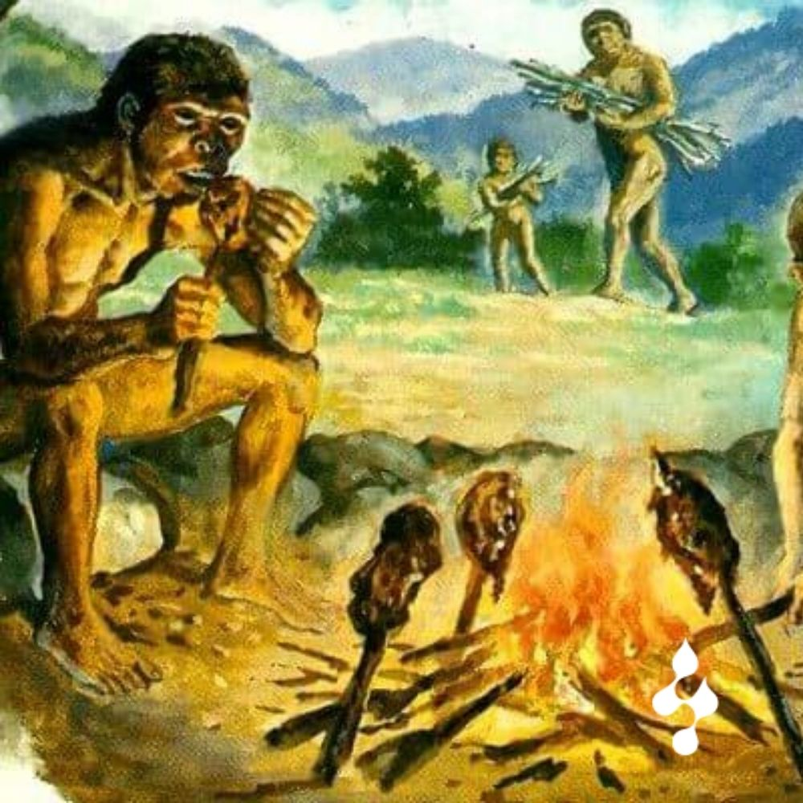

Edad Media
Uso masivo de especias para conservar carnes y pescados en Europa.
La cocina comenzó cuando el ser humano aprendió a dominar el fuego, transformando ingredientes crudos en alimentos cocinados.

Uso masivo de especias para conservar carnes y pescados en Europa.
Nace la "Haute Cuisine" en Francia, priorizando la estética y la técnica.
Pulsa el botón para ver las grandes etapas recorridas con un bucle for.
Generamos las décadas desde 1900 hasta hoy usando un bucle while.